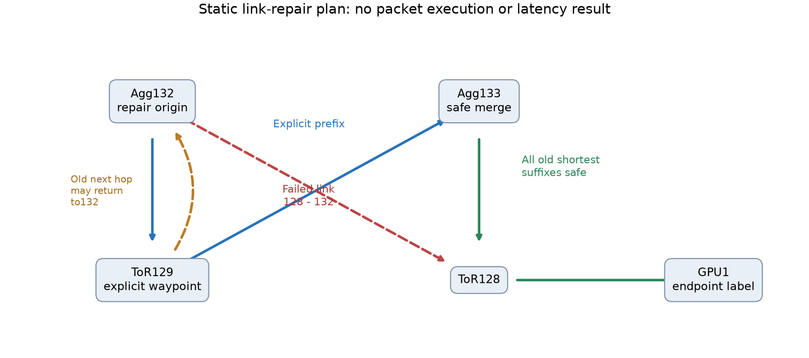

128端点Clos · 20交换机 · 保护128–132边 · 静态规划，不执行网络或预测收益
| 覆盖情况 | 组合数 |
|---|---|
| 不受此出口影响 | 128 |
| 原ECMP仍有存活出口 | 112 |
| 普通LFA可以新增保护 | 0 |
| 需要显式修复段 | 16 |
256是源/目的组合数，不是256卡实验，也不是故障丢包数。规划不读取真实路由或未来恢复事件，结果仅由物理图和保护边决定。
普通LFA要求故障前距离满足严格不等式：D(N,D) < D(N,S)+D(S,D)。等号不能接受，因为邻居可能有一条旧最短路经过S。Agg132至GPU1的原出口只有ToR128；改送ToR129时，129按旧ECMP仍可能送回132。

安全计划：先明确执行132→129→133，到133后再使用旧路由133→128→GPU1。首段两个跳分别需要132 port2→129 port17、129 port18→133 port2。所有旧后缀都已核查，不能只挑一条好路径。
上一轮长故障发现ACK在Agg132被丢弃。本轮进一步说明，不能把“普通LFA”当成已足够强的绕路基线；该位置需要有显式中间节点的修复转发。下一步在同一原生网络中实际执行修复段，真实计算头部、队列和序列化成本，再比较MoE任务等待。
当前交付公开命令scaleout repair-plan、可修改输入和逐目的计划。它没有新增ns-3恢复模式，没有实现MPLS/Remote-LFA/TI-LFA，没有取得新性能收益，也不证明现有live_ecmp会产生环路；环路风险针对“直接改送任意邻居”的候选实现。
9项新单位检查和独立Floyd-Warshall核查全部256个组合、16个修复段及所有旧ECMP后缀；4类篡改被拒绝。没有新网络运行、构建、GPU执行或依赖修改。首版测试中的一条后缀排序断言失败已保留，修正为边集合比较；没有放宽严格不等式。